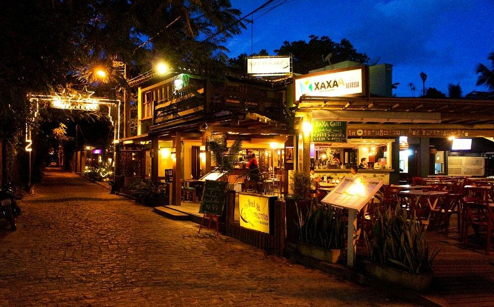
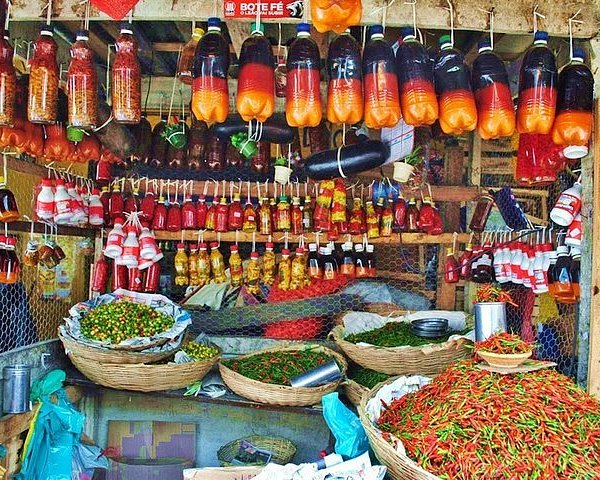
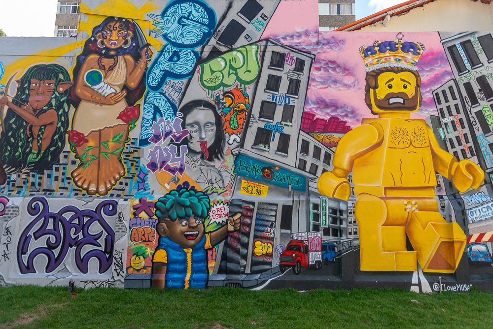

Este site foi desenvolvido com o objetivo de apresentar e valorizar a cultura do estado da Bahia. A proposta é mostrar a diversidade cultural da Bahia, permitindo que o usuário conheça tradições, sabores e expressões artísticas do estado.

Lugares Históricos

Culinária Baiana

Artesanato e Arte
A Bahia é muito mais do que um estado do Nordeste — é um dos berços da história do Brasil. Foi aqui que os portugueses chegaram em 1500, e Salvador, sua capital, se tornou a primeira capital do país. Hoje, com milhões de habitantes, a Bahia continua sendo um dos estados mais importantes e marcantes do Brasil.
Mas não é só a história que chama atenção. A Bahia é um lugar cheio de vida, com praias, cidades históricas e regiões como a Chapada Diamantina, que encantam qualquer pessoa. O clima quente, o litoral e a diversidade de paisagens fazem do estado um dos destinos mais visitados do país.
A cultura baiana é única e muito forte. Está presente na música, nas festas, na religiosidade e no jeito acolhedor do povo. O Carnaval de Salvador, por exemplo, é um dos maiores do mundo, e pratos como acarajé, vatapá e moqueca mostram toda a riqueza da culinária local.
Este site foi criado justamente para destacar tudo isso de forma simples e acessível. A ideia é apresentar lugares históricos, sabores e formas de arte que fazem parte do dia a dia da Bahia e ajudam a construir a identidade do estado.
Mais do que trazer informações, a proposta é despertar o interesse e o encanto por esse lugar tão diverso, cheio de história e cultura em cada detalhe.